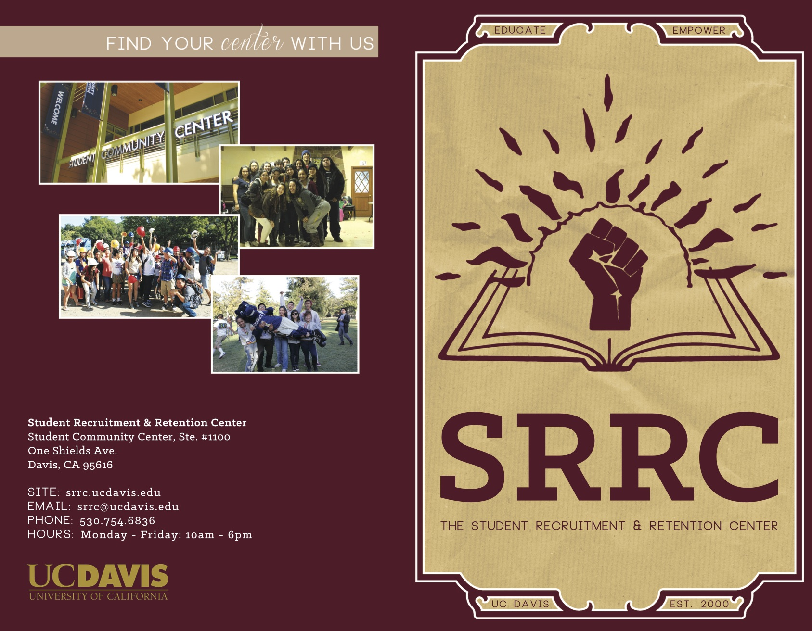
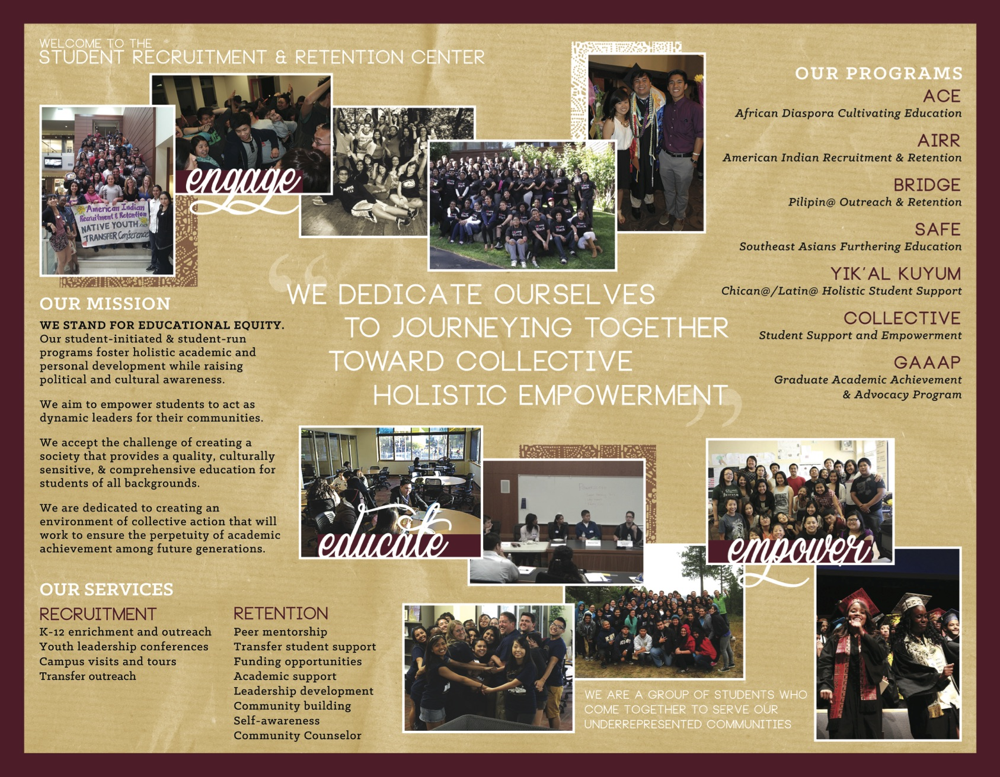
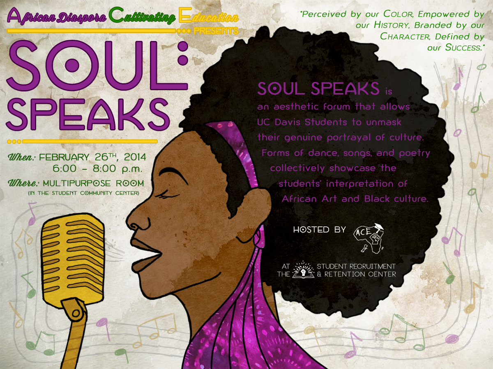

STUDENT RECRUITMENT
& RETENTION CENTER
Illustration, Identity & Branding, and Marketing
The Student Recruitment & Retention Center (SRRC) at UC Davis stands for educational equity and hosts programs that foster holistic academic & personal development while raising political & cultural awareness, in order to empower students to act as dynamic leaders for their community.
Bi-Fold brochure for the SRRC (front & back covers)
Working with staff student members of different cultural and ethnic backgrounds, it was important for all the SRRC’s marketing collateral that I created for their events and programs to reflect multicultural awareness and the needs of the student community.
Bi-Fold brochure for the SRRC (inside)
Each event and program was personalized by its coordinator to fit the culture and needs of its target community:

Top: "Soul Speaks" Open Mic
Left: Southeast Asian Retreat 2014
Right: Native American Welcome Celebration
Throughout my time working with the SRRC and its staff, I found it rewarding to learn from my peers and to create visual representations of their events, programs, and what they stand for.